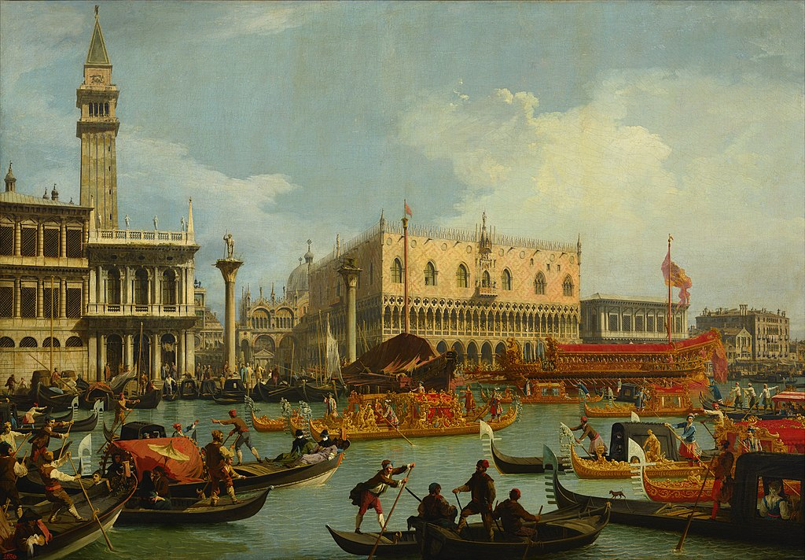

<head>
<meta charset="UTF-8" />
<meta name="keywords" content="drawing, painting" />
<meta name="description" content="drawings by Sunjy" />
<title>Sunjy</title>
<link rel="shortcut icon" type="image/x-icon" href="../../mImages/mCommon/favicon.ico" media="screen" />
<link rel="stylesheet" type="text/css" href="../../mCsses/mCommon/mCssA.css" />
<link rel="stylesheet" type="text/css" href="../../mCsses/mCommon/mCssB.css" />
<link rel="stylesheet" type="text/css" href="../../mCsses/mCommon/mCssC.css" />
<link rel="stylesheet" type="text/css" href="../../mCsses/mCommon/mCssD.css" />
<link rel="stylesheet" type="text/css" href="../../mCsses/mContent/mCssA.css" />
<link rel="stylesheet" type="text/css" href="../../mCsses/mContent/mCssB.css" />
<link rel="stylesheet" type="text/css" href="../../mCsses/mContent/mCssC.css" />
<link rel="stylesheet" type="text/css" href="../../mCsses/mContent/mCssD.css" />
</head>
<script type="text/javascript" src="../../mScripts/mContent/mContentAA.js" /></script>
<script type="text/javascript" src="../../mScripts/mContent/mContentAB.js" /></script>
<script type="text/javascript" src="../../mScripts/mContent/mContentAC.js" /></script>
<script type="text/javascript" src="../../mScripts/mContent/mContentAD.js" /></script>
<script type="text/javascript"></script> 
<script type="text/javascript">
document.write('<div class="mImgAbsolute"></div>');
/*
document.write('<p class="mFontSizeBColor" />From a white paper...</p>');
document.write('<table class="center"><tr><td>');
document.write('');
document.write('</td></tr></table>');
*/
</script>


<script type="text/javascript">
document.write('<p class="mFontSizeBColor" />Bucentaur’s return to the pier </p>');
document.write('<p class="mFontSizeSColor" />“Bucentaur’s return to the pier by the Palazzo Ducale” by Canaletto depicts the Doge’s golden vessel, the Buccentoro returning to the pier during a prestigious Venetian Festival.<br><br>The busy canal with its gondolas crowding in on the festival is contrasted with the splendor of Venice.  <br><br>In exquisite detail, we can see St Mark’s Cathedral, the arcades of St Mark’s library, the gothic lace of the Doge’s palace, the long granite columns and the palazzos.<br><br>The annual festival depicted in this Canaletto painting is held on Ascension Day. The festival includes an ancient tradition that requires the Venetian Doge to sail to the Adriatic Sea and toss a gold ring into the sea as a symbol of the union of Venice and the sea.<br><br>This tradition ensured the prosperity of the City of Venice and her fleet. The journey begins at the Dodge’s Palace and ends at St Mark’s Cathedral. This painting captures the end of that journey.<br><br>This famous Canaletto is a typical example of the vedute paintings popular with Grand Tour travelers of the 1700s as a visual record of their travels.<br><br>Canaletto was one of the more famous painters of city views or vedute, especially of Venice.<br><br>Many of Canaletto’s paintings can be found in museums across the world, depict highly detailed, usually large-scale paintings of Venetian and other famous cityscapes or vistas.</p>');
document.write('<table class="center" /><tr><td>');
document.write('<br>The busy canal with its gondolas crowding in on the festival is contrasted with the splendor of Venice.  <br><br>In exquisite detail, we can see St Mark’s Cathedral, the arcades of St Mark’s library, the gothic lace of the Doge’s palace, the long granite columns and the palazzos.<br><br>The annual festival depicted in this Canaletto painting is held on Ascension Day. The festival includes an ancient tradition that requires the Venetian Doge to sail to the Adriatic Sea and toss a gold ring into the sea as a symbol of the union of Venice and the sea.<br><br>This tradition ensured the prosperity of the City of Venice and her fleet. The journey begins at the Dodge’s Palace and ends at St Mark’s Cathedral. This painting captures the end of that journey.<br><br>This famous Canaletto is a typical example of the vedute paintings popular with Grand Tour travelers of the 1700s as a visual record of their travels.<br><br>Canaletto was one of the more famous painters of city views or vedute, especially of Venice.<br><br>Many of Canaletto’s paintings can be found in museums across the world, depict highly detailed, usually large-scale paintings of Venetian and other famous cityscapes or vistas." />');
document.write('</td></tr></table>');
</script>


